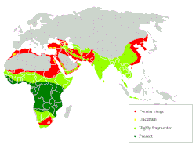
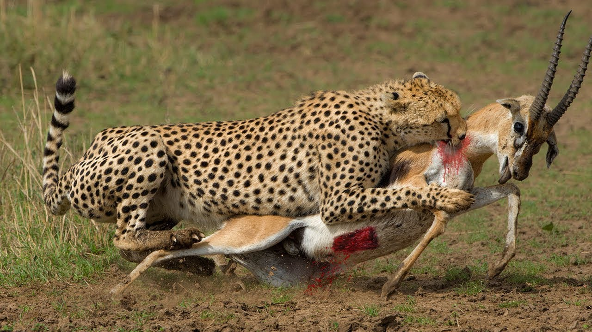
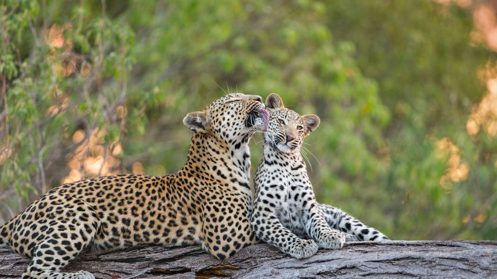

Detalles del Leopardo
Aquí se detallan las características físicas y el comportamiento general, así como su estilo de vida.
Hábitat y ubicación
El leopardo se adapta a diversos entornos. Podremos encontrarlo en los bosques tropicales y sabanas de todo el continente africano, y de igual forma en la vasta estepa desértica, en montañas y diversas regiones de Asia, incluyendo la India y China.
Alimentación
Son cazadores sigilosos y de hábitos nocturnos. Su dieta se compone principalmente de antílopes, monos, aves, insectos e incluso de peces y roedores medianos.



Reproducción
Las hembras de leopardo paren camadas que normalmente oscilan entre uno y tres cachorros, tras un periodo de gestación de alrededor de 90 a 105 días. Los cachorros nacen ciegos y son cuidados celosamente por la madre en un refugio oculto.
Estado de conservación
A nivel global es clasificado como "Vulnerable" por la pérdida de hábitat. Sin embargo, ciertas subespecies como el leopardo del Amur se encuentran en la categoría de "En peligro crítico".
Datos Técnicos
| Característica | Especificación |
|---|---|
| Largo del cuerpo | 90 cm - 160 cm (sin incluir la cola) |
| Peso promedio | 30 kg - 90 kg |
| Esperanza de vida | 12 - 15 años (en la naturaleza) |
| Velocidad máxima | 58 km/h en distancias cortas |